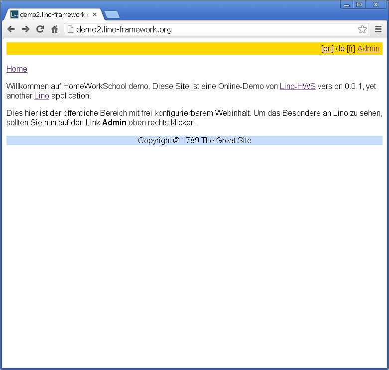
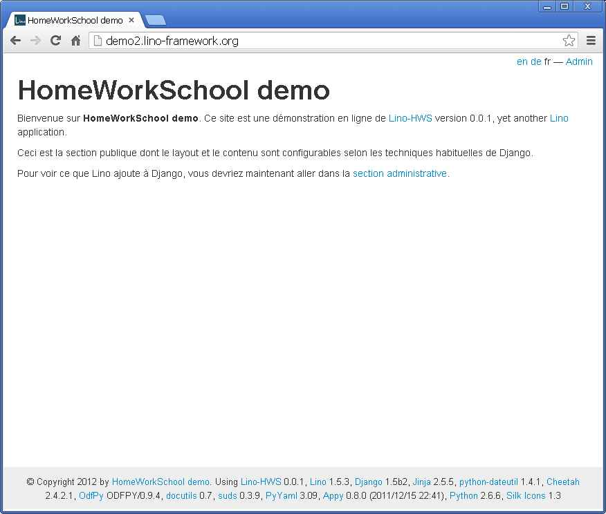
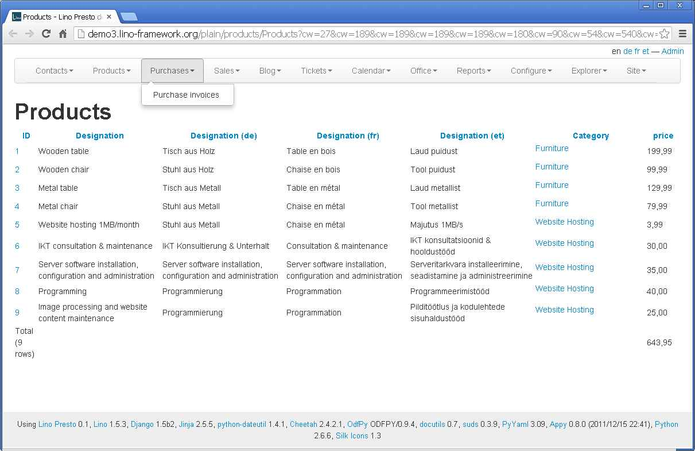

20121228¶
I decided to switch back to this blog because it will take more time than the Christmas holidays before the entries in /lino/history/luc201212.py would become visible.
Lino and content management¶
During the Christmas days I learned a lot about the Bootstrap CSS toolkit.
Before:
{kind=link}
After:
{kind=link}
And these pictures are only the tip of the iceberg:
I think I finally found a working solution for
lino.modlib.pages
and lino.apps.cms.
But it’s too early to write more about it...
Cannot assign “u’‘”: “Event.assigned_to” must be a “User” instance¶
Creating an event in the Calendar Panel in
http://demo2.lino-framework.org
caused a ValueError at /admin/restful/cal/PanelEvents:
“Cannot assign “u’‘”: “Event.assigned_to” must be a “User” instance.”
This was due to a plain simple bug in lino.utils.auth
which didn’t manage when it got a query containing
“su=” (an empty value for su).
A second reason was the fact that Lino.set_subst_user
caused the eventStore to send such a query.
Write a jQuery-based GUI?¶
Another example of how Lino now uses Bootstrap is the “plain HTML” view:
{kind=link}
When I play with this I can’t get resist to open a ticket and to dream at least about it: docs/tickets/67.